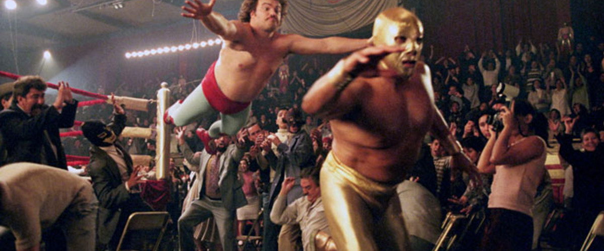

The Scoop on Scope
The Scoop on Scope
Travis to rework all slides up to angularJS Scope and introduce AngualarJS scope Key Topics
- JS Origin
- Prototypal Inheritance
- AngularJS Scope
Brendan Eich (Netscape 1995)
- LiveScript-->JavaScript (ECMAScript)
- Java (needed to look like Java)
- Scheme (took features)
- Self (took features)
Classical vs Prototypal Inheritance
| Classical Inheritance (Java) | Prototypal Inheritance (JavaScript) |
|---|---|
| Class and instances of class: Classes are immutable. You can't modify or add new methods to them at runtime. | Prototypes are flexible. They may be either mutable or immutable. |
| Classes may or may not support multiple inheritance. | Objects can inherit from multiple prototypes. |
| It's verbose and complicated. You have abstract classes, final classes, interfaces, etc. | It's simple. You only have objects and extending objects is the only operation required. |
Classical vs Prototypal Inheritance cont.
...I now see my early attempts to support the classical model in JavaScript as a mistake.
Douglas CrockfordPrototypal Inheritance: 6 year old
With Classical you'd only have a template person (interface or abstract class) and not a real dad
stackoverflowPrototypal Inheritance
var scott = {
teeth: 42,
stitches: 10
};
// create two new child objects
var noah = Object.create(scott);
noah.stitches = 22;
// at anytime parent can get a new property
// and it is reflected in the children
scott.brokenbones = 2;
console.log(noah.brokenbones); //==> 2
// Pop Quiz:
console.log(noah.teeth);// ==>42
scott.teeth = 5;
console.log(noah.teeth);// ==>5
noah.teeth = 100;
console.log(noah.teeth);// ==>100
Prototypal Inheritance
Demo JSFiddle
In JavaScript there are 5 primitive types: undefined, null, boolean, string and number. Bi-directional linking can be maintained by sticking to the rule: always having a '.' in your ng-models.
AngularJS Scope
What is Scope
- An object that refers to the application model
- An execution context for expressions
- Are arranged in hierarchical structure
- Provide APIs to observe model mutations
- Provide APIs to propagate any model changes
- Provide context against which expressions are evaluated
- It is the glue between application controller and the view
Prototypal Inheritance in AngularJS
Creates new scope and inherit prototypically
- ng-repeat
- ng-include
- ng-switch
- ng-view
- ng-controller
- directive with scope: true
- directive with transclude: true
New scope but does NOT inherit prototypically
- directive with scope{...}
ng-repeat
ng-repeatng-include
ng-includedirectives
Directivesng-controller
To share data between controllers, the solution is [ironically] very
simple. Extract the data models that need to be shared across the
application into a service and then inject that service into the
controllers that need it.
onehungrymind.com
Demo JSFiddle
Review
Two-way binding
- 1. define objects in the parent for your model, then reference a property of that object in the child: parentObj.someProp
- 2. use $parent.parentScopeProperty (not always possible, but easier than 1. where possible)
- 3. define a function on the parent scope, and call it from the child (not always possible)
AngularJS Take Aways
- normal prototypal scope inheritance -- ng-include, ng-switch, ng-controller, directive with scope: true
- normal prototypal scope inheritance with a copy/assignment -- ng-repeat. Each iteration of ng-repeat creates a new child scope, and that new child scope always gets a new property.
- isolate scope -- directive with scope: {...}. This one is not prototypal, but '=', '@', and '&' provide a mechanism to access parent scope properties, via attributes.
- transcluded scope -- directive with transclude: true. This one is also normal prototypal scope inheritance, but it is also a sibling of any isolate scope.
Conclusion
References
That's fantastic!
Go. Go away! Write some Angular!
/
#